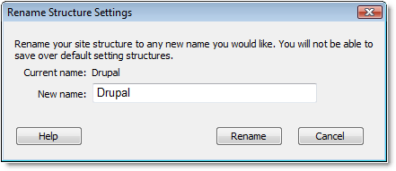

When renaming your site structure, keep in mind that you cannot use any of the 3 pre-defined site structures, or 'Custom'.
Note: If the site structure name is already being used by another structure, you will be prompted to enter a different name or confirm that you wish to overwrite that structure. You will not be able to overwrite a default preset structure.
